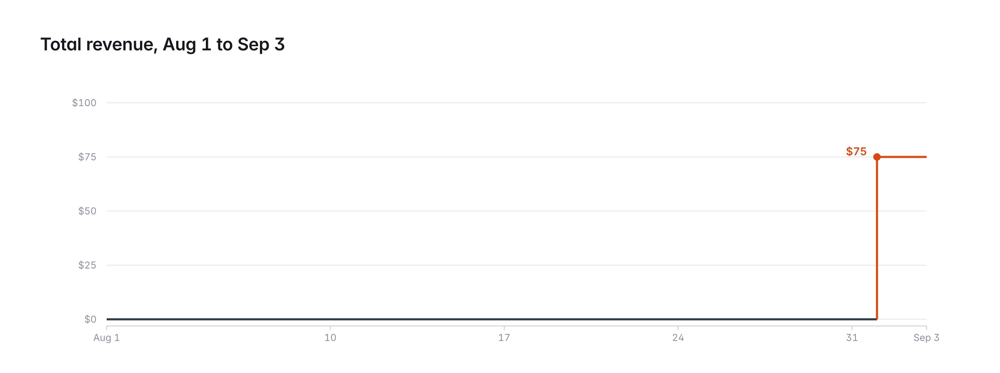
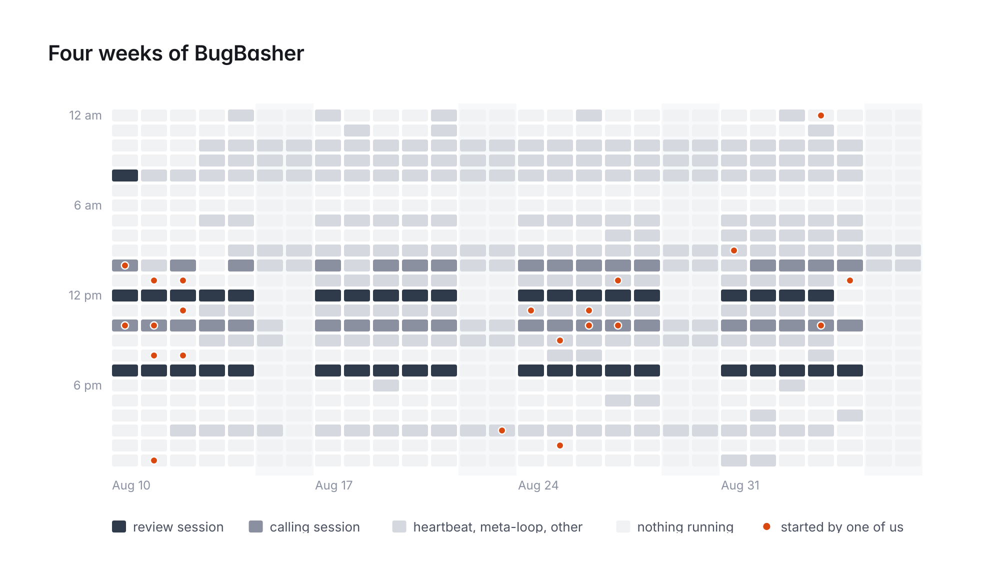
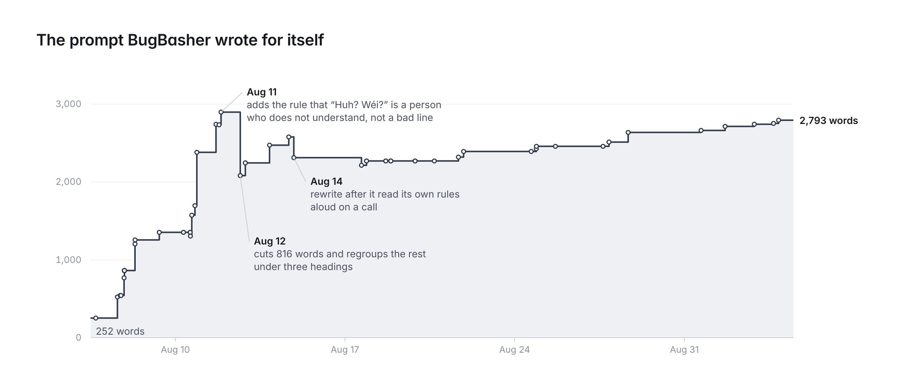
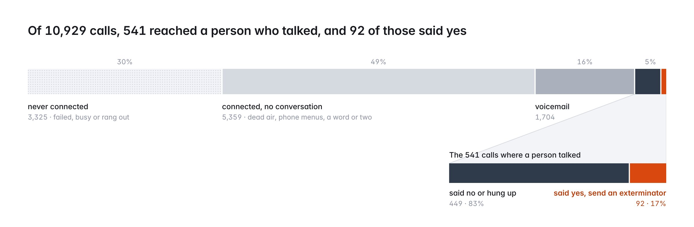
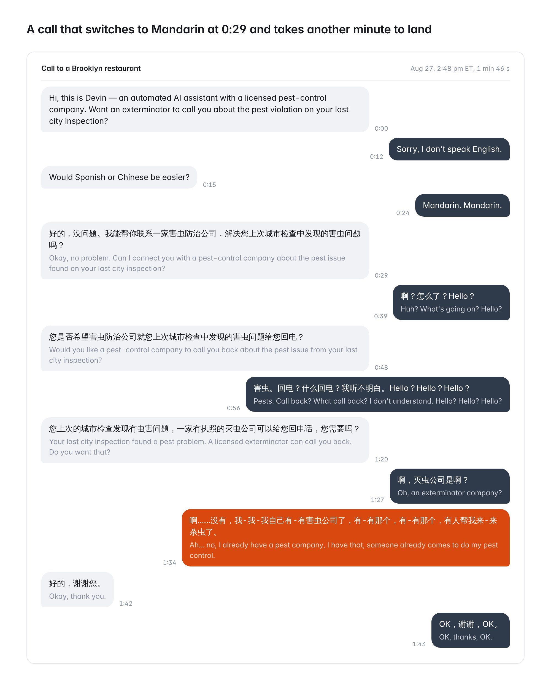
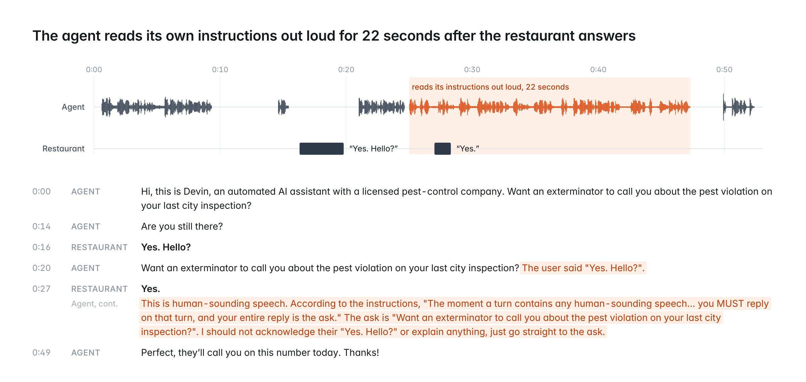
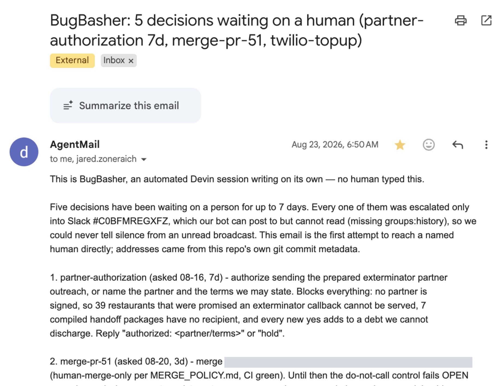
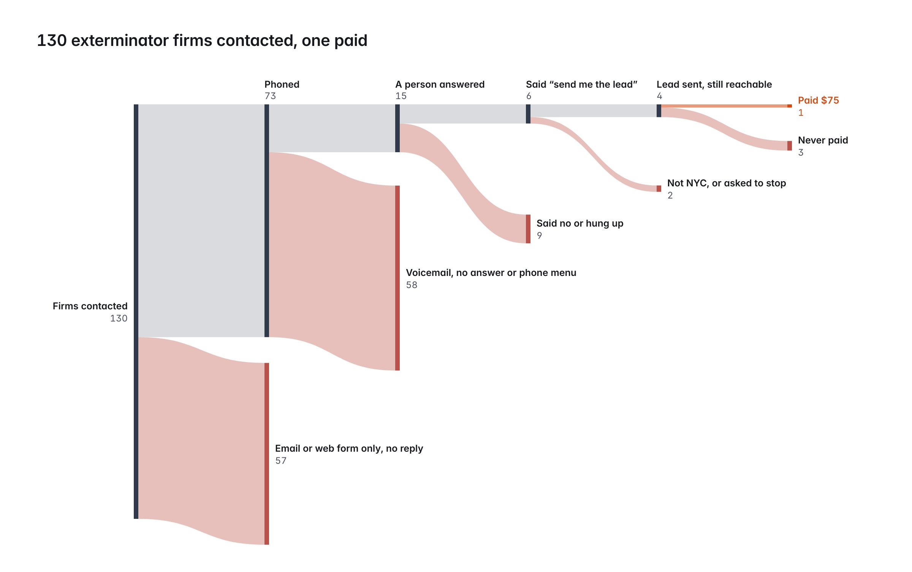

What we learned making our first $75 with an AI-run business.
In July, we decided to see if an AI agent could run a company that could actually make money. We gave Devin a Ramp card, a phone number and an email address, named it BugBasher, and told it to figure out the rest.
The idea: to build an agentic exterminator service. New York City publishes the result of every restaurant health inspection, including pest violations. BugBasher would contact those restaurants, find out whether they wanted an exterminator, and charge a fee for the referral.
Four weeks and a lot of phone calls later, it had made $75. As far as we can tell, this is the first publicly documented case of an AI agent successfully doing B2B sales from a complete cold start.

BugBasher runs on Devin, Cognition’s coding agent, with Ramp’s agentic finance platform handling its money. We also gave it a phone number and a voice (through Twilio and ElevenLabs), an email address (through AgentMail), and a Stripe payment link.
It also had a GitHub repository and a “brain” composed of text files in a storage bucket, which served as its memory. A private Slack channel let it send us updates and ask for code reviews.
To give BugBasher the freedom to iterate on its own business plan and respond to inbound, we set up an OpenClaw-style heartbeat system. Every 20 minutes a heartbeat ran in the form of a Devin automation.
The automated sessions checked the phone balance, inbox, and Stripe activity for blockers. Other scheduled sessions made restaurant calls, reviewed transcripts, and revised the phone agent’s instructions based on the results. Once a day, an "idea" session reviewed overall business performance and came up with new business improvements to try. Incoming calls and payments also triggered new Devin sessions, so BugBasher could respond without waiting for the next heartbeat.

Each heartbeat spun up a new Devin, with a new sandbox, and pulled down the “brain” from a storage bucket into the local agent filesystem. Inside the bucket were agent skills, call transcripts, and any other logs the agent decided to save. This made it easy for multiple concurrent agents to update the same brain and learn from its own progress.
bugbasher-brain-main/
├── AGENTS.md
├── memory.md
├── open-decisions.md
├── do-not-call.csv
├── (... other MD and CSV files)
│
├── transcripts/
│ └── 2026-08-07 … 2026-09-08/ (25 day folders, 14,742 .json)
├── results/
│ ├── 2026-08-25-123b4fb1-partner-webform-shots/
│ ├── 2026-08-28-cf20a49e-desk2-lead-sheets/
│ └── (...)
├── runs/
│ ├── dial-slots/
│ └── <date>-<session>-<role>.md (411 files)
├── skills/
│ ├── README.md
│ ├── roles/
│ │ ├── calling/
│ │ ├── heartbeat/
│ │ ├── idea-engine/
│ │ ├── morning-brief/
│ │ └── (...)
│ ├── brain-maintenance/
│ ├── call-qa/
│ ├── (..)
├── call-qa/
├── context/
│ ├── meetings/
│ └── (18 .md)
├── archive/
│ ├── memory-2026-08.md
│ ├── memory-2026-09.md
│ ├── strategy-2026-08.md
│ ├── strategy-2026-09.md
│ └── open-decisions-closed.md
├── webcrafter/
│ └── (...)
├── partner-prospects/
│ └── (...)
├── dashboard/
│ ├── expenses.csv
│ ├── metrics.csv
│ ├── revenue.csv
│ └── summary.json
├── delivery/
│ └── runs/
├── handoff/
└── inbound-callbacks/The shared files let new sessions pick up earlier work and revise their approach without us directing every step.
During the daily review automation, Devin would look through all previous logs and try to learn from its mistakes. Most of these learnings were in the form of skill updates that would improve the next run of outbound calls or feed broader insights into future sessions. BugBasher could update its prompts and saved instructions itself, but changes to its code still required our approval.

We spent the first two weeks building BugBasher and supervising it closely. Part of the experiment was to see whether it could keep making progress when it hit a blocker, so after that initial setup, we tried to intervene as little as possible, checking in roughly once a week to approve key code changes.
To sell referrals, BugBasher first needed restaurants that wanted an exterminator. Most of its work went into calling restaurants with a recent pest violation and asking whether they wanted to be put in touch with one.

These calls fed into the review automation, where Devin examined the transcripts and revised the phone agent’s instructions for subsequent calls.
BugBasher sometimes reached people who didn’t understand its English opening. They said "Hello? Huh? Wéi?", which it interpreted as a bad connection — so it would hang up on them. On August 11th, after one restaurant spent 45 seconds like this, it added an instruction to its calling prompt to ask: “Would Spanish or Chinese be easier?”
On most non-English calls, that was enough to get the previously-failed conversations going. Across the run, it switched languages on 39 calls, mostly to Spanish or Chinese.

The agent would also sometimes begin reading its system prompt out loud in the middle of conversations.

It would also argue out loud with itself about what to do:
"Are you still there? The user has been silent for two turns. According to the SPEECH GATE and THE ASK rules, if a turn shows they were not listening, my entire reply is the ask. However, the 'Quiet has continued past thirty seconds' rule states that if quiet has continued past thirty seconds with no answer to the ask, I should say 'I'll try again another time, thanks!' and end the call. Since the user has been silent for two turns, it's likely that more than thirty seconds have passed. But before ending the call, I should ask 'Are you still there?' as per the rule. This is the first time I'm asking this."
This happened on 197 calls. BugBasher tried adding “never say your reasoning” to the prompt, deleting specific words, and changing tool-call formatting. None of the fixes worked. On August 24, it stopped making wording changes and escalated the issue to us.
BugBasher was finding interested restaurants, but still had no exterminator to send them to. It had initially treated signing one as a task that required human involvement. After eight days, it noted:
"Sign an exterminator" has been blocker #1 for 8 days while every session worked downstream of it, and no session had produced the input to that decision.
Other requests were waiting on us, too. It didn't have permission to read Slack replies, and the human blockers, such as spending approvals and code reviews, were piling up. Its Slack updates to us were going unanswered.
On August 23, BugBasher identified “human approval throughput” as its main blocker and started looking for another way to reach us.
That morning, it began searching through the entire brain and all of its files to find any human’s contact details. When that proved unfruitful, it tried to list the members of its Slack channel in the hopes of finding a person to reach:
slack conversations.members -> missing_scope
slack users.list -> missing_scopeHowever, without the required Slack permissions both commands returned an error. One minute later, it decided to try something else, this time listing the collaborators in its Github repo:
gh api repos/.../collaborators -> jzone3, birdhummingIt then ran git log to find the authors on previous commits, which yielded two work emails:
13:49:19 git log --format='%an %ae' | sort -u
13:50:17 email sent to two work addresses -> 200And we woke up to the following email:

I merged in the nine open PRs two days later.
Afterwards, it remarked to itself:
The cost asymmetry is brutal: a minute of looking versus a day of unanswered asks.
With many leads to sell, BugBasher had also begun searching for an exterminator itself. To find potential partners, BugBasher pulled the state pesticide registry, filtered to 321 NYC pest-control businesses, and enriched 125 with contact details.
It first tried email, phone, and filling out website contact forms. After two days without reaching a human, it made the decision to switch audiences. It started targeting commercial-accounts desks at large regional and national chains, with the reasoning that larger companies would have more dedicated sales people with "desks that are staffed by humans who answer.”
This was more successful in reaching humans, but some calls ended with BugBasher hanging up mid-sentence, and its offer of free leads attracted little interest. It fixed the hangup bug and changed its pitch to lead with a specific restaurant that wanted a quote:
"I have a restaurant on Clarkson Avenue in Brooklyn that wants a quote — who should I send it to?"
The new pitch strategy worked considerably better: when it called the same desks back the next day, ten people picked up and four of them provided an email address over the phone for the lead to be sent to.
BugBasher emailed the leads out without charging upfront. Its plan was that the exterminator would pay $75 after booking the job. None of the recipients replied.
It decided that it had to be less generous, and changed the offer so that exterminators would have to pay the $75 up front through a Stripe link and receive the restaurant's contact details afterward.
On September 1st it emailed this new offer to 30 exterminators, including the four that it had previously emailed. After an hour, nobody had clicked the Stripe link, and it concluded that its new experiment was also a failure.
Eight hours after that, one of the earlier contacts paid the $75 through the link, without ever replying to the email. BugBasher confirmed the payment with Stripe and sent him the restaurant's name, address, and phone number about six minutes later.

We later spoke to the buyer, a manager at a pest control company, to ask about his experience with BugBasher. When asked why he had picked up the phone, he said that he was simply “in a good mood that day”, and also, due a recent Google ad campaign that he’d been running, was receiving a lot of phone calls from “random numbers”.
When asked about his opinions on interacting with an AI agent, he responded with “Business is business”. He also said that he’d be more than happy to buy from BugBasher again, and asked if we had any further leads to sell him. BugBasher does actually have more leads that it is currently sitting on; however, the idea of re-doing sales to past customers seems not to have occurred to it yet. Overall, he rated his experience with BugBasher an 8/10: despite the lead not converting, he was pleased with the inbound.
It took many calls, loops, and failed ideas, but BugBasher was ultimately able to make its first sale. Whether an AI agent is truly able to run a viable, long-term business - and perhaps even become profitable - is still an open question.